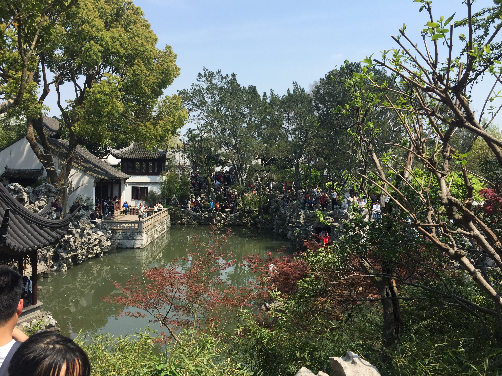
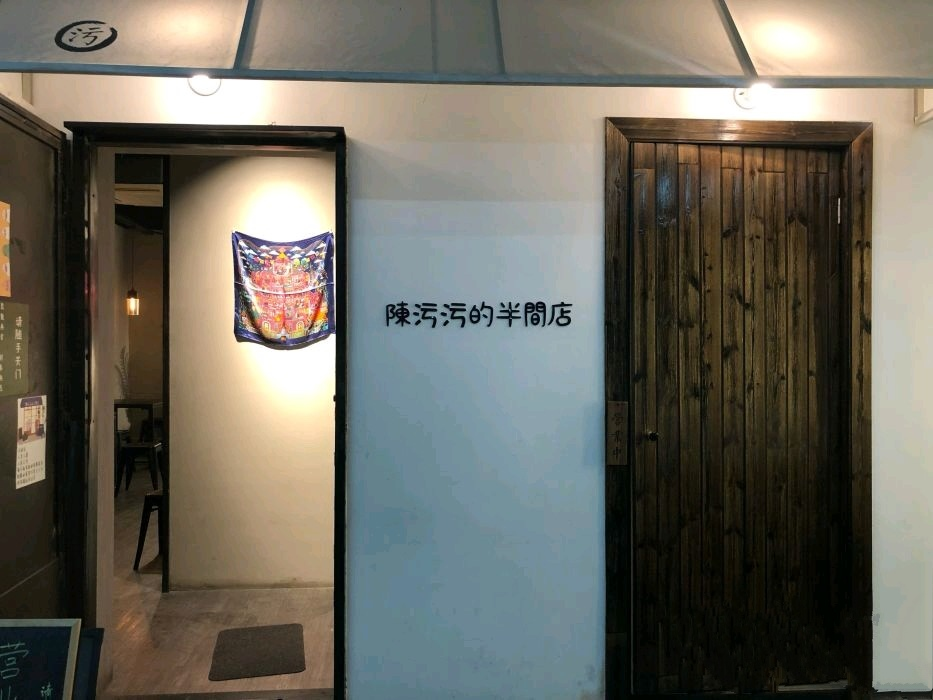
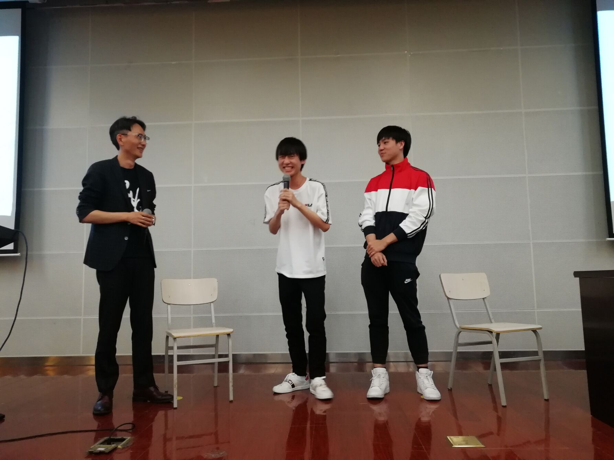
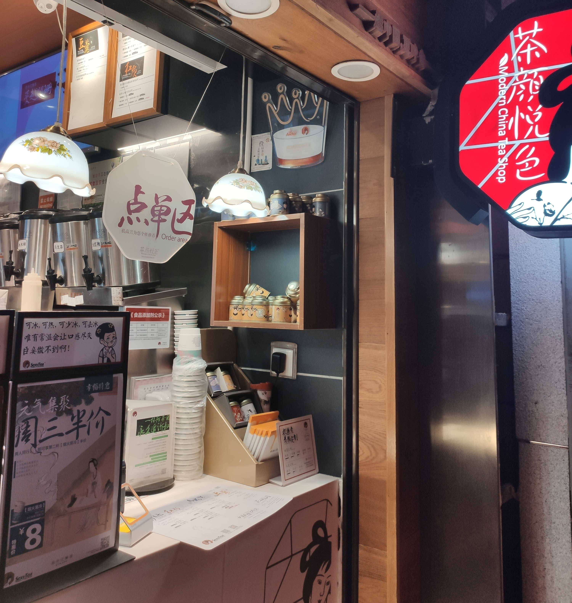
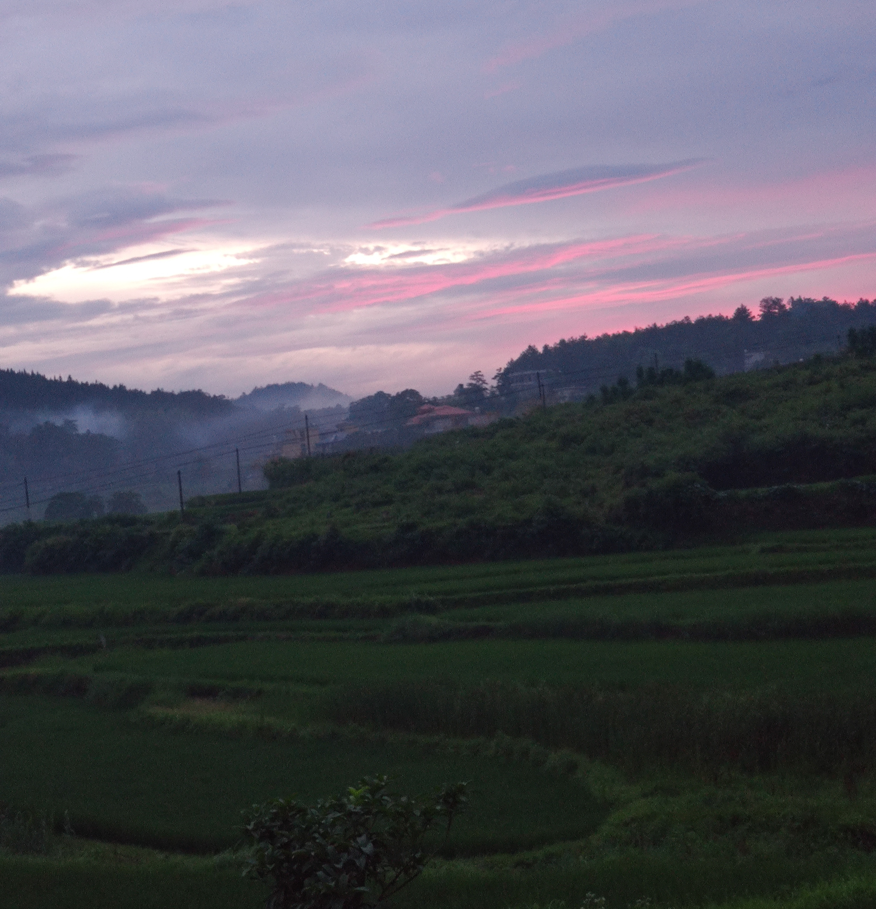

冬天
当初雪降临鼓楼，泛黄的枯叶夹杂着白雪飘落，20世纪10年代最后一个冬天也随着窗外的北风呼啸而过，一去不回。一如过去的十年，月升日落，寒来暑往，时间呼啸而过，回忆的尽头风声凛冽。又到了一年年末，总想找个时间总结这一年，既恋过往，也期未来。这一年我历经了从本科生到研究生的转折，也算是在学业上又迈了一步，结识了很多新的朋友，也发生了很多的事，有开心的，也有难过的，有难忘的，也有痛苦的，有欢笑，也有泪水，这些种种，像一个个的像素，编织起来，成了一个五彩斑斓的梦，伴随着遥远的歌谣，飘过孔雀城外，飘向我的，纯真年代。
毕业论文
毕业设计其实早就开始选题，但是碍于有些同学需要考研的缘故，一直拖着，大四上学期快结束的时候才差不多开始，中间进行了毕业设计选题，还在导师的小组内开了些零散的会议，大概就是确定一下毕业设计的方向。毕业设计可以选择实习公司的项目，或者选择本院系内导师的论题，但是由于我之前实习的美团项目属于内部的项目，不开源，而且当时距离实习辞职已经过了差不多两三个月，再去拿实习的项目，很不方便，所以就选了院系里研究生导师的项目作为毕业设计。选导师的项目意味着从头实现一个项目，或者跟着导师组里面学长学姐的项目做，需要写很多的代码，了解很多的东西，虽然能学到些东西，拿实习的项目不需要额外写代码，只需要准备后面的毕业论文即可。
开题报告1月2号开始，3月15号结束，中间过了一个寒假，我是寒假来再写的开题报告，毕业设计的题目几经更改，最后确定为《基于要素文本相似的诉讼服务推荐系统的设计与实现》，就是实现一个web应用，能够根据用户描述的自身案情，为用户提供与他案情相似的裁判文书。裁判文书是从中国裁判文书网下载的，然后转成xml格式，便于后面的解析。从裁判文书中提取要素信息是根据往届学长写的一个java项目，看别人的代码总是痛苦的，好在学长各处都写了注释，才节省我很多的时间。后面是web前端的搭建，用的是vue，然后是后端，用的是python的django框架，后面就是推荐的算法的实现。中间每周都要小组内开会，报告这周的毕业设计进度，也算是一种督促。
项目的实现前前后后大概花了两个多月的时间，到五一假期结束后，开始着手毕业论文的写作。毕竟是第一次写毕业论文，没有任何的经验，只能照着学长的模板，依葫芦画瓢。论文的结构大致为：引言、相关技术概述、系统需求和概要设计、系统详细设计与实现、总结与展望，其实每个软件项目大概都可以按照这个结构来编写文档。写论文的时候仿佛又想到大二的时候被软工二支配的恐惧，各种用例图、流程图、模块图，还有各种的表格数据。大概一周之后，在一步步的摸索中终于完成了论文初稿，但这只是个半成品，后面还有复杂的修改。第一次修改是对照着论文的格式要求进行比对，一检查才发现自己的格式很乱，很多没有达到论文的要求，例如字体大小，表格格式，图片居中等等，第二次就是小组内的互相批阅，审查别人的论文，查出论文中的问题，果然别人可以看出很多自己看不到的问题，然后又是一通修改，中间自己又检查了好几遍，最后是导师的批阅，也指出了很多存在的问题，前前后后大概七八次修改，这才算改得差不多。
还有一个问题就是论文的查重，学校的要求是重复率在10%以下，以知网为准。但是知网每个学生只有两次免费查重的机会，后面的查重每次需要两百多块，属实有点小贵。我第一次查重的的时候重复率高了点，由于我查重的时间比较晚，修改论文的时间比较紧，以后研究生的毕业论文一定要早一点查重，这样留给修改的时间就会比较充裕。修改论文之后，又去网上找了其他网站查重，比知网便宜，一次大概十几二十块，但是和知网的重复率比较起来有些许出入，最后还是要以知网的为准。重复的部分大多出现在技术概述这一章节，只能自己重新组织语言，很考验作为当代社会主义根正苗红大学生的我的扎实语文功底。
兜兜转转终于将论文改好，查重也通过了，接下来就是毕业论文答辩。5月30号早上我们小组论文的答辩，本以为会很严肃很压抑，实际却很轻松。三四个老师在台下，每个同学大概十分钟左右的答辩时间，讲完答辩的ppt后，回答老师提出的问题，然后就完成了答辩，最后也顺利通过了答辩。6月12号将论文打印出来，让导师签字，然后再交到教务员那里存档。这本科阶段最后一项任务也总算完成，看着手里的毕业论文，心里充满了欢喜。那个曾经遥不可及的毕业，也即将在几天后如期到来。
人间四月天
早在三月初的时候，高中同校的老乡要我四月初清明假期的时候去苏州一起玩，和她的高中同学。想想我都来南京三年多了，还没去周边的城市逛逛，这是一个很好的机会，而且清明正是踏青的好机会，于是就约好清明假期的时候去苏州玩。由于怕清明假期的时候不好买票，我们在3月12号左右订好了前往苏州的车票，也订好了民宿。虽说烟花三月下扬州，但这次没有三月，也没有扬州，有的只是林徽因的四月天，以及张继的姑苏城。
3月11号有一个高中同学从长沙来南京参加南航的考研复试，我第一次去机场接机，坐地铁去机场用了一个半小时，又在机场等了一个多小时才终于等到他，我才感觉到原来接机这么辛苦。然后又带他去找他在网上预订的南航旁边的酒店，由于第二天需要复试面试，居然还带他去剪了个头发。第二天面试的时候又在外面等他，幸好有另外一个在南京的高中同学和我一起，不然可真够无聊的。复试完后，三个网瘾少年去网吧坐了会，感受下召唤师峡谷迎面吹来的风。
四月份来得很快，4月4号晚上坐上前往苏州的高铁，一行中从南京来的两人，从武汉来的六人，总共八人。到苏州的已经快十一点了，没有地铁了，只有叫出租车去网上预订的民宿。到达民宿之后，闲来无聊，毫无睡意，几个开始打牌，打到很晚，挤一挤睡了几个小时之后开始第二天的行程。第二天去了观前街，每逢节假日，这种旅游景点，当然是人山人海，观前街类似于老街，旁边有一些老建筑，但随着旅游的开发，街上大多数都开了商业店铺，我们一路走走停停，随便逛逛。中午在一家名为宽城子成都市井火锅的店吃饭，中间出了一个小插曲，我们八个人分成两桌坐，我们这桌点菜下单之后，好像是被服务员忘了上菜，一直等了差不多一个小时，最初还以为只是上菜慢一点而已，但看到比我们晚来很久的客人都上菜之后，我们才去和服务员交涉，这才发现原来是忘了，让我们白等了一个小时。吃完饭之后在这条老街上漫步，小桥流水，充满着古代江南水乡的生活气息。（本来在一条小桥上有合照的，但当时不是我拍的，我也忘记保存了，找不到了）。晚上回到民宿，当然正好是同行的一个人的生日，我们瞒着他买了蛋糕，给了他一个惊喜，还买了一个西瓜，可奈何民宿里没有刀，只能弄出小缝后徒手掰开。能让八个人都参与进去的最简便的娱乐方式就是打牌，这是一个让大家很快熟悉和认识的方式，在聚会或者一起出去玩的时候很有效。

第三天去了拙政园，有名的苏州园林。在初中的时候，叶圣陶的一篇《苏州园林》将苏州园林写得引人入胜。既然来到苏州，又怎能不去看一眼苏州园林呢。早上去的时候，外面的买票的人排起长龙，挤都挤不进去，我们在旁边找了个肯德基，吃了午饭，待下午时分人少了很多，才买票进去。里面依旧是人山人海，风景却也非常漂亮，苏州园林果然名不虚传，四月也正好是花开的季节，这时的园林里开着各色各样的花，还有几个穿着汉服的小姐姐在拍照，与这古色古香的园林相互映衬，光彩夺目。第四天就踏上了回南京的火车，这是我第二次坐火车，第一次是之前从北京回长沙的时候。两三个小时的车程，八个人有说有笑。到南京的时候下午一点多了，在一个同学的建议下，我们决定去吃螺蛳粉。这也是我第一次，来到这家位于南京新街口地下停车场，名为陈污污的半间店的螺蛳粉店。

4月14号，RNG电子竞技俱乐部的校园行来到我们学校，同行的有上单letme和辅助ming。我一直都很关注LPL，之前去现场看过2017年的春季赛决赛和2018年的夏季赛决赛，这两场比赛都有RNG。这次是一个很好的机会，去看一下电子竞技的职业选手，了解一下他们的故事。校园行在仙林，我早上从鼓楼过去，吃了午饭过后，发现已经排了很长的队了，有很多来自很远地方的粉丝，还有从其他城市来的。大概排了一个多小时，校园行的分享会终于开始。RNG此次校园行目的一是为了宣传俱乐部，二是为了推广电子竞技这项不被大家所认可的职业。报告厅里坐满了同学，还有很多同学没有座位站在后面看，足以见得他们的热情。letme分享了他的故事，他从一个默默无闻的网瘾少年，遇到偶然的机会，在家人万般阻挠下，还是加入了英雄联盟职业战队，起初战队成绩很不好，他也被很多人质疑，比赛时承受很大的压力，有来自观众的，也有来自家人的，家人总认为这是一项“不正当”的职业，但这并不影响他的坚持。终于他在无数个日夜rank苦练之后，被选为RNG上单，获得LPL的冠军，打进全球总决赛，在2018年雅加达亚运会上夺冠，为国争光，苦尽甘来。

似乎所有出名的点子竞技选手的故事都是这样，但是还有很多打不出名堂的选手，既没取得任何成绩，也荒废了青春年华，这是大多数人的写照。选择哪一条路，要看自己有没有天赋和努力，而不是盲目走下去，特别是在电子竞技的世界里，你还要承受不被人理解，不被人接受。当时的letme已经处于半隐退的状态，已经几个月没有上场打过比赛，果然在两三个月后，他宣布退役。电子竞技职业选手的职业寿命只有几年，能不能像烟花一样，绽放瞬间的美丽，还是一直寂寂无名，没有人会知道，这是一门很有风险的职业。虽然在近几年有些改观，但电子竞技依然不被大多数人所接受，年轻人可能会比较接受新兴的事物，但这种以打游戏为职业的行为，在上一辈的人看来，就如洪水猛兽般面目可憎。想要改变这种观念，需要无数电子竞技从业者的宣传和努力。
每年的4月14总会发生一些难忘的事，科比退役，柳时镇与姜暮烟的爱情故事结局…下一次的4月14又会发生什么呢
一身诗意千寻瀑，万古人间四月天。
离别
当毕业答辩结束的时候，就又走到了凤凰花开的十字路口，风声轻柔，阳光耀眼，一如四年前的那个夏天。
4月22早上拍摄毕业照，院系两百多人在一起拍照，在我的印象中，这是第二次，第一次是在离开仙林前，在杜厦图书馆门前，辅导员给我们拍的。田田姐是一个很好的辅导员，认真负责，有时候节假日还会给我们送点小礼物，让我们感受到温暖，虽然她也没比我们大几岁，她在我们的眼里就像个大姐姐一样，和蔼温柔，细腻贴心。大二的时候在仙林晚上十点出去和室友看电影，在地铁上遇到了田田姐，她说要赶晚上的火车回老家山东（如果没记错的话应该是山东）一趟，已经很久没回去了，辅导员这项工作确实很辛苦，田田姐也做得很好。在我们毕业后的夏天，田田姐和她的男朋友结婚了，在她送走了她照顾了四年的两百多个大学生之后，终于有时间寻找自己的幸福。
毕业照的背景是标志性的北大楼，爬满绿色的爬山虎，背后是鼓楼的紫峰大厦和蔚蓝的天空，我们的模样凝固在照片中，时光也定格在此。6月14号下午，学院毕业典礼在鼓楼举行，院系里的领导和老师依次上台讲话，这些平时被我们吐槽的老师们，却在此刻变得如此亲切，毕业典礼大概两个小时，最后是合影环节，同学们依次排队上台和老师们合照，还发了纪念的小礼物，至此，15届软件学院成为别人口中的曾经。6月18号下午，学校的毕业典礼在仙林方肇周体育馆举行，那天下着些许下雨，由于场地的限制，很多赶来的家长只能在恩玲剧场观看毕业典礼的现场直播。毕业典礼大概持续了三个小时，最后是学位授予仪式，各院系依次排队从学校领导的手里接过证书，这个曾经无数次在电视上看到过的画面，终于亲身经历，难免有点紧张，体育馆内三四千人一同见证这个难忘的时刻。毕业典礼结束后和同学们拍照留恋，人们发明拍照就是为了留住过去的时光，当多年后重新翻开泛黄的相册，看到曾经的画面，那过去的美好扑面而来。6月25号领到毕业证书，学校的事情告一段落。回到宿舍的时候，室友都差不多搬走了，晚上躺在床上，突然感受到一种“当我终于拿到五杀，寝室却已空空如也”的滋味。学校要求毕业生在30号前离校，第二天我整理好东西，将东西寄存在学校，踏上了回湖南的高铁，我的朋友们，别了。


夏天夏天
6月26回到长沙，准备第二天转大巴车回家，恰好有两个也在长沙转车回家的同学，晚上就和他们在长沙逛了逛。其实我这几年回来都会途经长沙，长沙的几个景点我都差不多逛完了，橘子洲、岳麓山、爱晚亭、太平街…我们决定去热闹的五一广场走走，当时正值最热的时候，没走多久就很热了，听闻长沙的茶颜悦色很是有名，我们决定去尝尝，五一广场有很多店，但是排队依然要排很久。在排队的时候，遇到一个来问路的小姐姐，她问我们今晚橘子洲是不是有烟花，我这才想起橘子洲每逢节假日或者平时的周末都会有烟花表演，但是我们不确定今天有没有，只能跟她说不知道。在买完奶茶走在路上的时候，看到人流都在玩江边走，这才确定有烟花。五一广场离湘江中的橘子洲并不远，但是越靠近江边，人越来越多，在沿江大道的时候，更是人山人海，只能被人流推着走，又恰逢炎热的夏天，汗水一直流。不知道是在施工还是为何，江边已经架起了阻挡的铁板，但烟花表演还是如期开始，我在大二的时候停留长沙也看过一次橘子洲的烟花，很是漂亮，这次也不例外。烟花大概持续了二十多分钟，江边的人潮才慢慢退去。都说烟花易冷，只绽放刹那美丽，但是能惊艳这么多人，又何尝不值呢。

第二天早上坐大巴车回到家，在家待了几天后，高中的同学要我和几个同学去他家玩，他家在村子里，记得高中刚毕业的时候，十几个人去他家玩，也正是像这样的夏天，晚上打着手电筒去水库旁抓青蛙，漫山遍野的蛙声和蝉鸣，我们一路说说笑笑，走走停停，笑声传遍乡村的小路。当时回去的时候坐得是城乡的大巴车，正值下午，我在车的最后面，打开车窗，风吹进来，阳光照在我的脸上，看着十几个同学，画面印在我的脑海里，真是一段美好的时光呀。这次再次和同学一起去他家玩，驱散一下这夏天的炎热。7月4号我先到了，在村口等了两个小时才等到其他两个同学来，然后去山上摘野蘑菇，这摘野蘑菇可是很有讲究，得认得蘑菇的品种，还得在树林深一点的地方才能找到蘑菇，当时正是刚下完雨，山上满是黄泥，但丝毫没有打消我们的热情。一两个小时下来，倒也摘了不少的蘑菇，也让我认识了很多野蘑菇的品种。第二天还去旁边的水库钓了鱼，拿上自己制作的鱼竿，在水库旁钓了一个下午，才勉强钓了几个小的，回家的炒着吃，果然自己钓的鱼格外好吃。从水库回家，在农村乡间的小路上，三个人拿着鱼竿，拿着用来装鱼的桶，恰逢日落，火红的晚霞的映在天边，与青翠的山相互映衬，远处有几家的炊烟飘起，分外美丽，如入仙境。

每次放假回来的时候，都要去不远的小城里，和我的高中同学聚一聚，四年来皆是如此，似乎成了我的一个习惯。一个小时的车程很快，这五十公里的路自高中以来我已经坐过数不清的次数，沿途的风景我都太熟悉了。每次来都要去读书的高中的看看，高考的成绩已经出来了，像以往一样贴在校门口，想起了曾经的我们。听说高中学校要搬了，换到县里另外一个新修的地方，那以后，又有哪里能够承载我三年的时光。这座小城有过我太多的回忆，是我读高中的地方，是我的家乡。在这座不大的小城里，有一群朋友，只要一个消息，或者说一声，只要几分钟，就能聚在一起，在热闹嘈杂的广场，在深夜无人的街道，总是如此亲切。以前聚餐都是在外面的饭店，这小城大大小的饭店都被我们吃遍了，这次想换自己做，于是就自己去超市买了食材，来准备午饭，班里的几个女生想秀一下厨艺，很快就做出一桌子的饭菜，大家围在桌子旁，气氛很热闹。每次聚会饭菜总有剩余，我们为了处理这些饭菜，想出了一个游戏，有几个人就拿几张扑克牌，然后让大家轮流从中选牌，选到大小王的要吃一勺剩下的菜，这样能有效解决剩余饭菜的问题，但是运气差的人难免会吃撑，每次抽中大小王的人总是很倒霉，其余人则是幸灾乐祸哈哈大笑，但是下一轮抽牌不知道会不会又轮到自己呢。
当夏天慢慢过去，又到了离开的时候。

武汉游
以前去学校或者回家的时候总是会路过武汉，高铁总是会在车站停十几分钟，而我从未有过时间去领略这座古老而现代化城市的风景。上次一行去苏州的八人，有六个是在武汉读书的，而暑假最后的这十几天，是我读研前仅有的可以自由支配的时候，于是和一个同校的同学约好一起去武汉和他们玩几天，然后再回南京。临去武汉前几天，在airbnb上订了民宿，这家民宿相对于周围其他的民宿价格要低很多，而且还处于交通很便利的地方，环境也很好，房东夫妇是武汉大学的老师。8月17号我乘坐大巴车去长沙，然后从长沙转高铁去武汉，到达武汉的时候，已经是下午六点多了，到民宿的时候，已经接近六点半了，其他的七个人已经早早到了民宿，同校的一个同学把她的表妹也带来玩，一个读小学的小姑娘。看到民宿的厨房里面有厨具和锅，于是我们去楼下的超市买了火锅底料和食材，晚饭就准备吃自己整的火锅。八个人洗菜的洗菜，洗碗的洗碗，忙忙碌碌下来这才准备好了火锅，虽然味道不怎么样，但重要的是一起吃的氛围。

由于晚上又一起打牌到很晚，第二天中午才起来。有一个高中同学在武汉读书，所以就约她下午一起和我们去湖北博物馆逛逛。外面的阳光火辣，丝毫不枉武汉四大火炉之名。